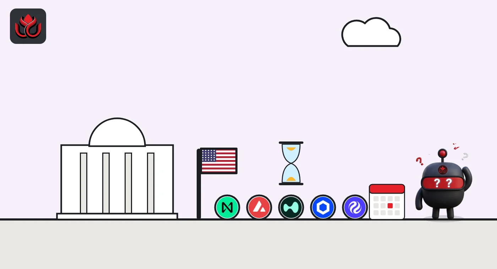

21 REX-Osprey altcoin ETFs get a new start date, November 20, after 13 months of waiting
An October 22 SEC filing pushes back the effective date for 21 planned REX-Osprey funds, from AAVE to XLM. Most of their tokens fell 15% to 38% in the past 30 days.
Key points
- ETF Opportunities Trust filed Post-Effective Amendment No. 1069 on October 22, 2026, only to set November 20, 2026, as the new effective date for 21 REX-Osprey crypto funds.
- The funds were first described in Post-Effective Amendment No. 408, filed October 3, 2025. A September 24, 2026, filing had set October 23, 2026, as the date.
- On CoinGecko, 20 of the 21 tokens fell over 30 days, from 4.3% for TRX to 37.6% for NEAR. Only INJ was up, by 0.4%.
What the October 22 filing says
REX-Osprey's 21 planned single-token funds are series of ETF Opportunities Trust, a fund trust registered with the U.S. Securities and Exchange Commission (SEC). On October 22, 2026, the trust filed Post-Effective Amendment No. 1069 under Rule 485(b)(1)(iii). It says the filing is made only to designate November 20, 2026 as the new effective date for Post-Effective Amendment No. 408, which the trust filed on October 3, 2025. It adds no new prospectus and points back to the one in the 2025 filing.
An effective date is the day a fund's registration can take effect. It does not by itself mean the fund will list on that day. A launch also depends on the issuer and an exchange.
The 21 funds, staking and plain
The filing names these funds. Twelve carry "+ Staking" in the name, which means the fund plans to stake some of its tokens to earn network rewards.
- With staking: ADA, ATOM, AVAX, CRO, DOT, HYPE, INJ, NEAR, SEI, SUI, TAO and TRX.
- Without staking in the name: AAVE, BCH, ENA, HBAR, LINK, LTC, OKB, UNI and XLM.
Rival funds already trade for some of these tokens. LC Insight covered Canary's staked INJ fund and Grayscale's Hyperliquid fund this month.

Timeline
Post-Effective Amendment No. 408 describes the 21 REX-Osprey funds
Amendment No. 1011 sets October 23, 2026 as the effective date
Amendment No. 1069 moves the date to November 20, 2026
New effective date in the latest filing
How the 21 tokens traded in the past 30 days
The new date lands during a weak month for these tokens. CoinGecko data read at 6:45 a.m. ET on November 11 shows bitcoin down 11.4% in 30 days, at about $73,970. Of the 21 tokens, 19 fell more than that, by 15.2% (UNI) to 37.6% (NEAR). TRX slipped 4.3%. NEAR, SEI and ENA lost more than a third. INJ was the only one higher, up 0.4%.
30-day price change, selected REX-Osprey fund tokens
%
November 11, 2026, 6:45 a.m. ET. Source: CoinGecko.
What the filing tells investors
Filings that only move a date are routine in fund law, and the trust gave no reason in the document. What it shows is that, as of October 22, the 21 funds were still waiting. Anyone tracking a launch can check EDGAR, the SEC's filing database, for a new date filing in the days before November 20, or for a final prospectus, which usually comes right before a fund starts trading.
LC Insight analysis
This section is our reading of the facts above, not a statement of fact.
- We think the repeated date filings show issuers keeping a place in line rather than signaling a launch. A plan first filed in October 2025 still has no trading date.
- The likely result is that only some of the 21 funds launch first, if any do. Several of these tokens already have rival funds, and demand for small single-token funds is untested in a falling market.
- The staking label is the part to watch. Twelve of the 21 funds plan to stake tokens for network rewards, so their final prospectus will show how much yield an ETF wrapper passes on to holders.
What's next
- A new Rule 485(b)(1)(iii) filing before November 20, 2026, which would push the date again
- Any final prospectus or listing notice naming tickers and fees
- Whether the staking funds launch together with the plain ones
Disclaimer. This article is based on public information and the sources listed below as of the update time shown. It is for information only and is not investment, legal or tax advice. Figures may change as companies and authorities publish new data.
Sources
- SEC EDGAR, ETF Opportunities Trust, Post-Effective Amendment No. 1069, filed October 22, 2026 (read November 11, 2026, 6:42 a.m. ET)
- SEC EDGAR, ETF Opportunities Trust, Post-Effective Amendment No. 1011, filed September 24, 2026 (read November 11, 2026, 6:43 a.m. ET)
- CoinGecko, token prices and 30-day changes (read November 11, 2026, 6:45 a.m. ET)